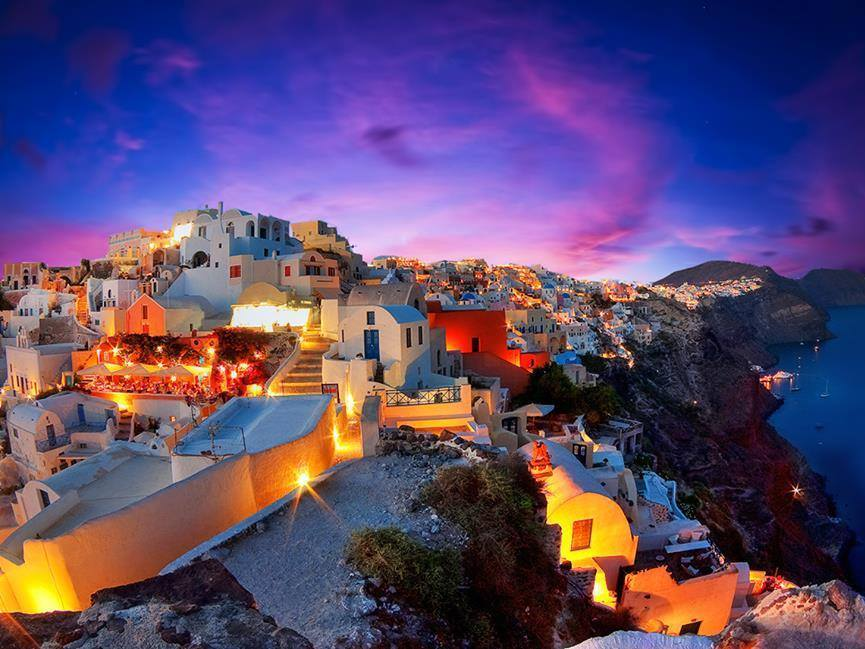

Santorini
Santorini , officially Thira and classic Greek Thera , is an island in the southern Aegean Sea, about 200 km (120 mi) southeast of Greece's mainland. It is the largest island of a small, circular archipelago, which bears the same name and is the remnant of a volcanic caldera. It forms the southernmost member of the Cyclades group of islands, with an area of approximately 73 km2 (28 sq mi) and a 2011 census population of 15,550. The municipality of Santorini includes the inhabited islands of Santorini and Therasia, as well as the uninhabited islands of Nea Kameni, Palaia Kameni, Aspronisi and Christiana. The total land area is 90.623 km2 (34.990 sq mi). Santorini is part of the Thira regional unit.
